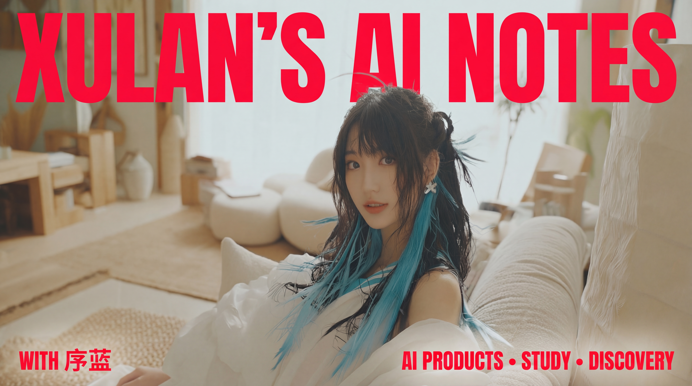

Insight
8 min
AI 到底依赖什么
把 AI 放回现实系统里看一遍：算力、数据、算法之外，还有工具、环境与治理。
打开文章AI PRODUCTS • STUDY • DISCOVERY
这里不再展示给前端用户无关的站点结构和制作备注，而是把内容本身放到前面。 现在这套站点会把视频文案、封面素材、产品思路和学习方法整理成真正能浏览的内容入口。



Featured
AI 到底依赖什么
Research
优质 AI 信息源
Tutorial
Docker + n8n 安装Home
所有“给创作者的建议”“站点文件结构展示”“模板拆分说明”都已经从访客动线里移走。 首页现在只服务读者，负责把内容主题和入口讲清楚。
Study
不再只追工具热榜，而是回到人的精力、判断力、真实项目和长期积累。
Discovery
从国内市场、海外创始人、行业数据到开发者社区，建立分层的信息判断系统。
Products
从黑客松地图产品到工具教程，内容会继续向产品理解和实际搭建延伸。
Featured Blogs

Next
Blog
每篇内容都已经有自己的封面、摘要和独立页面，不需要再跳到无关的结构子页。
去 Blog 选择文章Products
目前会先写“正在开发 / 制作中，后续可能会上线 zzz~”，等产品整理好再继续扩展。
去看产品页